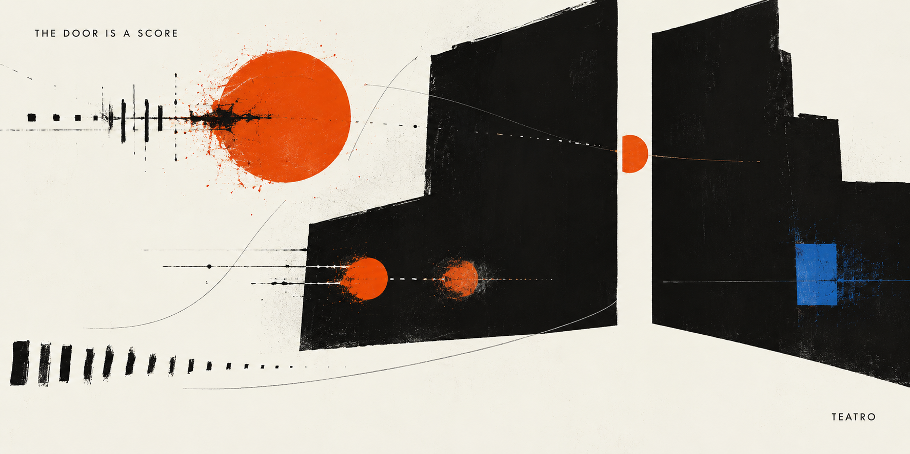
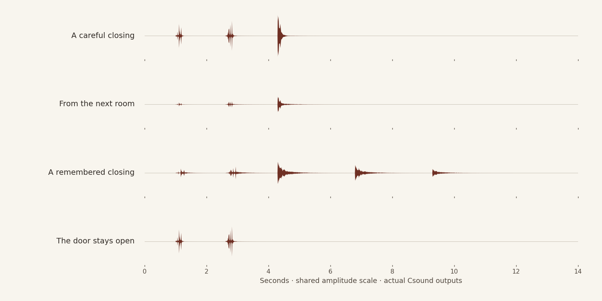

The Door Is a Score
Geräuschemachen, semantic reading, and the passage from an audio file to a performance.

A door closes. The sound lasts less than the sentence that tells us about it. Yet it may tell us that someone has left quietly, that someone is being kept out, or that an ordinary room has become impossible to enter. The difference is made by a gesture, a place, and a moment. A catalogue can supply a recording of wood meeting wood. A performance must decide what the closing does.
This is the starting point for a new direction in the Fountain Coach estate: a semantic read aloud with two independently addressable performances for each textual expression. One carries the voice. The other carries the work of a Geräuschemacher: action, material, acoustic perspective, and chosen silence. Satzfunk provides the editorial listening context; Sing owns the vocal performance; SatzfunkPlayer is the playback instrument; Teatro connects the sound score to its engines. The listening study below makes a first part of that direction audible. The complete automatic integration remains work to be done.
The studio was already an instrument
On 24 October 1924, Frankfurt’s SÜWRAG broadcast Hans Flesch’s Zauberei auf dem Sender live. The Deutsches Rundfunkarchiv’s account identifies it as the first original radio play in German broadcasting history. A disruption of the broadcast becomes its subject: the apparatus and its competing programme elements enter the drama. No recording of that transmission survives; later productions are new performances of the surviving manuscript.
The distinction is useful here. A performance can survive as instructions without surviving as its original sound. Radio’s artists also learned to make meaning through the apparatus itself. The DRA describes their exploration of crossfading, cutting and montage. An acoustic work could be composed from relations between sounds, rather than simply transmitted from a stage. Our proposal follows that possibility; it does not claim an unbroken technical lineage from those studios to this software.
The more immediate precedent is a working craft. In an interview with Marta Krus for the Goethe-Institut, Geräuschemacher Max Bauer describes the importance of understanding a figure’s intentions and behaving through them. An available sound is not automatically the right performance. A falling object can acquire a different dramatic force according to how it is handled. His radio credits place that practice in productions for ARD broadcasters and ORF, as well as live Hörspiel.
That is a demanding inheritance for a machine. The task is to connect a sonic gesture to a reading of the action, while keeping that reading open to correction. The sound performer’s responsibility remains artistic: a technically plausible impact can still misunderstand the scene. We are borrowing this craft’s question, rather than claiming to have automated its judgment.
Listen to what the closing does
Four newly written microtexts direct three openly licensed recordings. Choose a direction, then listen. Each audition is fourteen seconds long; the final space belongs to the gesture too.
Vorsichtig schloss sie die Holztür.
Keys, hinge, closure. Close, restrained, and in the present.
Download this direction as WAV · Recorded auditions: real Csound renders, with no independent loudness normalization between directions.
The recording is ready. “Perform it here” runs Csound in this browser.
During a live performance, after the closing has sounded, Recall the closing can return it to the room. This gesture is unavailable when the door stays open. Live sound requires a browser with AudioWorklet support; the recordings remain playable independently.

Source recordings, score and scope
Source sounds: rubberduck, 100 CC0 metal and wood SFX (2018): keys_01.ogg, wood_squeak_01.ogg and wood_close_01.ogg, under CC0 1.0. The squeak is cast here as a hinge; that is our sound-design choice. Keys · Squeak · Closure.
The recorded and live versions share the same authored score and Csound orchestra. The live engine is an unchanged local copy of @csound/browser 7.0.0; wrapper licence, third-party notices and upstream source are available. Csound core is LGPL-2.1-or-later.
This exhibit is a sound-engine study with authored directions. It contains no generated narrator, no automatic semantic-model decision and no MIDI 2.0 dispatch. It is not a native Teatro Scenario admission or proof of estate-wide routing. See the source and render record.
A verb is not a sound effect
Start with the careful closing. Keys establish a hand at work; a squeak prepares the movement; a wooden closure completes it. Now hear the same events from the next room. Their order survives, but their acoustic address changes. The reader remains on this side of the wall. In the memory version, the gesture slows and returns. That recurrence is an authored interpretation of remembering, rather than a fact contained in a recording of a door. The final direction prepares the action and withholds its completion. Its most important event is the one we do not play.
These are modest choices, but they show what semantic must mean if the term is to earn its place. A reading has to distinguish a completed action from an intention, an intention from a refusal, and a memory from something taking place now. It has to retain a speaker, an addressee, a material and a perspective where the text supplies them. Where a reader supplies a motive or an acoustic treatment, that contribution must remain identifiable as interpretation.
A noun-to-sample lookup cannot make those distinctions. “She did not close the door” contains a door and a closing verb; a literal closing sound would contradict it. “She remembered closing it” introduces another time. A metaphor may call for no literal object at all. A semantic score must therefore carry conditions and relationships, including the decision to remain silent. The source words stay available, so a writer can challenge what the performance has made of them.
Two performances, one expression
The proposed default gives each textual expression a source address and a pair of synchronized stems: Stimme and Geräusche. An expression is read in context, with the identities and acoustic conditions of its scene. A room can continue across a sentence boundary; an echo need not stop at the end of a paragraph. Separately addressable outputs let the estate route the voice and the surrounding action to different destinations while preserving their shared time.
Sing would carry the renderer-neutral vocal intention into an OpenAI voice renderer. OpenAI’s official speech documentation describes instruction-based direction of delivery; its current migration guidance points new work toward the Realtime API. A voice request can ask for restrained phrasing, but it cannot guarantee that every word or pause will arrive correctly. The resulting take needs its own verification and alignment. A different generated take is a new performance, with a new duration, not a transparent replacement for the first.
Satzfunk’s editorial context would bind that take to its reading. SatzfunkPlayer would coordinate playback and seeking; Teatro would govern the sound relationships and their execution. Ear’s earlier listening study explains why observation remains separate from performance: an engine’s successful output is evidence that sound was made, not that the text was understood. The source, the interpretation, the take and the listening judgment need to remain distinguishable.
Where meaning becomes a parameter
Csound supplies a particularly clear place to examine this passage. Its origins lie in Barry Vercoe’s work at MIT in the 1980s, and the current project provides an open-source synthesis and signal-processing engine for desktop and browser use. In this study it plays samples, changes playback rate, filters them, places them in stereo and supplies reverberation. The words “remembered closing” are our direction. The engine receives concrete events and values.
The proposed estate integration adds an explicit binding between those two levels. A reading of careful movement can become a bounded excitation, a chosen envelope and a cue anchored to the actual spoken phrase. Perspective can become a declared spatial or acoustic parameter. Each mapping needs an engine, a parameter identity, a unit, a range and a transfer rule. The Csound Teatro contract makes those relationships inspectable instead of allowing an adapter to invent them.
MIDI 2.0 is the intended typed control plane for the supported operations. It can deliver a note or controller value to an engine that declares how to receive it. It does not decide that a character is frightened, and it does not carry the resulting voice and Geräusche audio. OpenAI’s vocal directions travel through its API; the stems travel through audio paths. Meaning enters through the source-grounded score and its explicit mappings. Greater numerical precision is useful only after we have decided what the number governs.
The episode can remain, and the room can open
A podcast can contain extraordinary acoustic art. Its distribution format imposes no artistic ceiling. What a conventional mixed episode gives its listener, however, is one rendered arrangement of the decisions made in production. An executable work can also retain the conditions from which another arrangement may be performed. The recording remains a valuable, stable edition; the score permits a different encounter.
Imagine keeping a narrator near while a remembered action returns from elsewhere; following a character through a doorway without moving the voice that remembers her; returning to an expression and hearing a second, explicitly different reading of its gesture. In an installation, the voice could remain in headphones while material actions occupy the room. In an accessible edition, the listener could keep the words clear while changing the spatial layer. These are proposed uses of separate performance routes, not capabilities established by the small study above.
The live recall gesture is narrower, and already audible: after a closing has passed, the reader can ask for its return. A new Csound event is made at that moment. The room’s memory is a compositional decision with a controllable consequence. It is a first experiment in letting an essay retain an action, rather than merely describe an audio technology.
The argument continues the estate’s earlier account of semantic compilation: stored material becomes an edition through authored decisions. It also returns to Teatro’s unfinished composition, where relations, attention and memory give a situation its form. Here that work begins with three recordings and a closing that can be heard differently. The next useful claim will be made when a real passage has acquired its voice, its Geräuschemacher performance, and two routes we can actually follow.
Sources and listening credits
- Ulrike Schlieper-Müller, “Zauberei auf dem Sender” von Hans Flesch (1924), ARD Hörspieldatenbank / DRA; and the DRA’s Weimar radio collection account. Historical references are linked for reading; no archival broadcast audio is reproduced here.
- Marta Krus with Max Bauer, Die Kunst der Geräusche, Goethe-Institut; Max Bauer’s radio work and credits. The essay derives a question for software from this practice; it does not attribute the software proposal to Bauer.
- rubberduck, 100 CC0 metal and wood SFX, 4 July 2018. Three original Ogg recordings retained; converted to mono 48 kHz PCM for Csound. The source recordings retain that dedication; Fountain Coach retains the authored sound-score and publication rights. Publicly downloadable sound is not necessarily openly licensed sound: these particular recordings carry an explicit CC0 dedication.
- Csound, the 7.0.0 source release, and the local authored sound score. The exhibit demonstrates Csound execution. Automatic semantic reading, OpenAI narration, native Teatro admission and MIDI 2.0 routing require their own integration evidence.